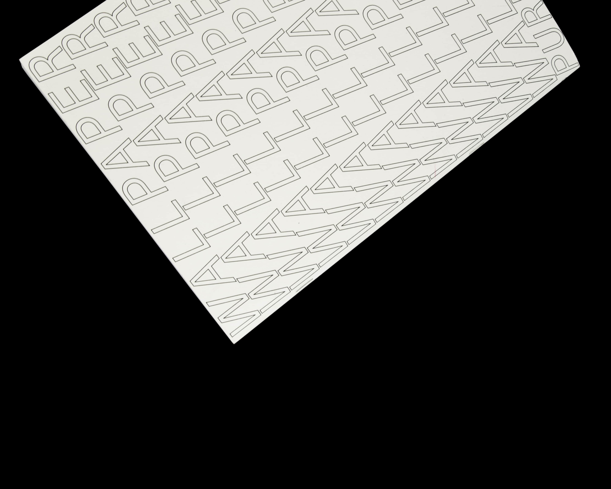

PURE NEWS
The project Pure News was created as an independent project in the fifth semester. It broaches the issue of the term «fake news». The starting point for each issue was a current newspaper article. First and foremost, the focus was on publishing. The zines were created in 24 hours and were concerned with the creative examination of current political events. An article on the poisoning of Kim Jong Un’s half-brother was the initiation for the first Issue «Poison». The basis for the second edition «Erdofan» was an article about the Oedipus complex of the German-Turks in Erdogan’s election 2017. The third edition «Wallpaper» deals with the idea of Trump of building a wall between the United States and Mexico. The aim was to reinterpret news and to inspire others to reflect on the topics covered in them. The zines should be produced quickly and easily.
ABOUT
Laura Leuenberger (*1994) is a graphic designer based in Switzerland.
2014 - 2015 Remedial Art Course Hochschule für Kunst und Design Luzern
2015 - 2018 Bachelor Visual Communication Hochschule der Künste Bern
Webdesign: Laura Leuenberger Code: Michael Schürmann
WORK
KFZ
Life in Pictures
Big Data
Heimat
Pure News
ABCicade
Royal Baden

Mousposition